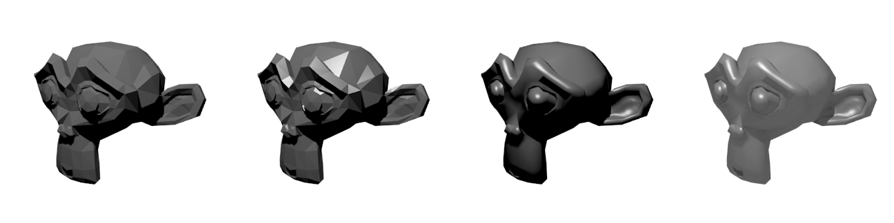
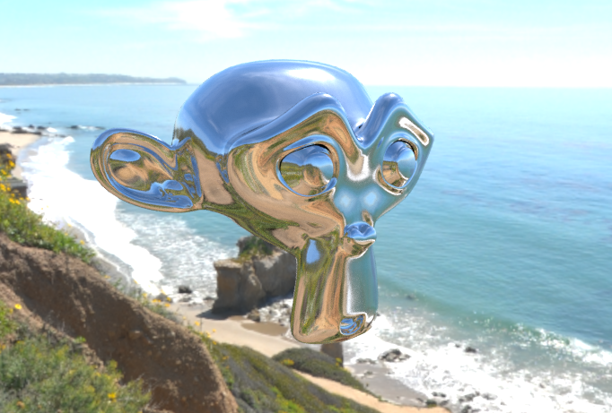

When working in the architecture industry, we often look at rendering engines from many angles, if you'd pardon the pun. We use simple renderings for diagrams, realistic rendering for architectural visualisations, real-time rendering for virtual reality prototyping, point cloud renderings for landscape and heritage scans, and so on. As the penultimate goal in archviz is to both represent abstractly and lower the costs of realistic prototyping, it pays to see what the future of rendering holds for the industry. But first, I'd like to briefly look at rendering's history.
When the CG industry first considered how to render an image on the scene, they were mostly concerned with the hidden surface determination problem. In short, when you have a polygon, which surfaces are visible from the camera's POV, and which are not. This mentality of thinking about how to "colour in an object" as opposed to how to simulate light lead to the development of one of the first rendering techniques: flat shading.
In flat shading, the rendering engine would consider the surface normal of each surface with respect to a light source. The more face-on each surface was, the lighter it was, and the more incident the surface was, the darker it was. If the path between the surface normal and a light source intersected with another surface (i.e., was blocked), it was shaded black. I've attached an example of flat shading in the first image below. This is roughly analogous to an actual physical phenomenon - that the angle of incidence to a material matters.
This was very simple, and also not very realistic. Flat shading was then combined with specular shading, which was essentially the same but heavily biased the angle of the surface normal, and had another parameter to control the falloff of the highlight. Although this created a convincing metallic glint (see monkey two in the image below), it was again just an artistic trick and wasn't based off an actual physical phenomenon. Nevertheless, it stuck, even to this day.
Shading techniques improved when a Vietnamese gentleman invented the infamous Phong shader. He had the idea of interpolating the vertex normals between vertices to give a gradient of colour through the face. This created much more realistic results (see monkey three), but again, had no real world equivalent.
The next improvement to the shading model was when people observed completely black shadows. In real life, global illumination and ambient light ray bounces mean that almost everything can be very effectively indirectly lit. There was no computationally efficient solution to the problem at the time, and so an ambient light constant was added to simply bump up the global lighting (see monkey four). This sort of formed the segway into modern day rendering, and thus ends our history lesson.

The moral of the story is that almost all the shading approaches had no real-life equivalent, and all the subsequent improvements were based upon a method that considered how to colour in a shape from the point of view of the shape itself. This is fundamentally incorrect - in the physical world, how an object looks (at people scales, forget quantum mechanic scales) depends on rays of light that are emitted from objects that are giving off photons (e.g. hot objects) bouncing around and losing energy. Energy is deposited and is reflected upon materials in very different ways depending on the microsurface imperfections of the material, and the chemical properties of a material.
Luckily, in parallel as these artistic shaders were being developed, physically-based "ray-tracing" rendering engines were also being developed. These ray-tracers traced rays of photons from and to cameras and light sources in the same way that the real world worked. Back then, they were cool technical demos, but always were too inefficient for any practical work. However, theoretically we had proven that if you throw enough computing power at the problem, you can get photo-realistic results. Nowadays, of course, everybody knows about ray-tracing and it's practically the norm in the market. I've shown an example of a chrome Monkey below reflecting the environment - the textbook example of what ray-tracing can achieve that traditional shaders could not (well, not without hacks and light maps and what not). You can see another example of photo-realistic rendering with Cycles that I've done too.

Almost every single popular rendering engine nowadays, such as Blender Cycles, V-Ray, Maxwell, Renderman, and Arnold are ray-tracers. They are getting faster and now combining both GPU and CPU to provide almost real-time rendering. In recent years, Physically Based Rendering, better real world scanners, and improvements on texture painters are three among many advances that make photo-realistic rendering easier and easier.
Basically, photo-realism is becoming really easy. An interesting subtle trend to additionally note is that we are actually getting more scientifically based. In the past, these ray-tracers, although somewhat physically based, had many approximations to the point that real-world units were ignored in favour of arbitrary values.
The reason why this is important is because penultimate photorealism comes from scanning in real-world data at increasing levels of fidelity. Engines, no matter how physically based they are, will find it hard to use this information if they are unable to be easily linked back to physical units and measurable scientific values.
Thankfully, this is actually improving. Simple things like using more IES profiles in lighting, or falsecolour luminance images are starting to be possible with mainstream renders. The popularisation of the Disney shader is slowly getting engines working on interoperability, and the ultimate interoperability, much like penultimate photorealism, depends on scientific values.
At the very least, we know that if we throw more computers at the problem it will eventually converge and leave us with a beautiful real image.
This is great news for architecture - the industry I'm in. Architecture is no stranger to smoke and mirrors when it comes to renders and a trend towards scientific rendering makes it easier to both cheaply prototype and still promise the same results to eager clients.
Until then, let's play with photoreal game engines and VR while the hype lasts.